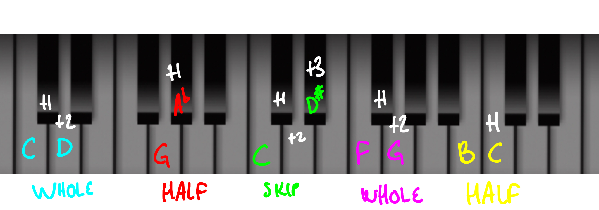

Steps
Half-step = +1
Whole-step = +2
Skip = +3
• A type of interval for adjacent letters.
• Stepwise motion is defined as moving melodically up or down by letter.
• The type of step is determined by the chromatic distance of the two notes.
• Steps are used in succession to make up scales like this:
WWHWWWH
Some examples:
